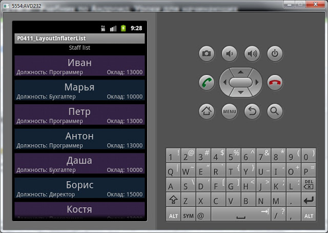

В этом уроке:
- делаем свой вариант списка
На прошлом уроке мы узнали, зачем нужен класс LayoutInflater и сделали небольшой пример, на котором подробно рассмотрели метод inflate и его параметры. Для закрепления темы сделаем еще один, чуть более сложный пример.
Мы сделаем свой аналог списка. Для начала придумаем данные. Пусть это снова будет штатное расписание с именами работников, должностями и зряплатой ) Т.е. каждый пункт нашего списка будет содержать три текстовых не редактируемых поля - name, position, salary. А пункты мы разместим в виде вертикального списка.
Для реализации нам понадобятся два layout-файла:
main.xml - основной экран для Activity, контейнер для пунктов списка
item.xml - экран с FrameLayout и тремя текстовыми полями в нем. Это будет пункт списка.
Приложение будет параллельно перебирать три массива данных, создавать для каждой тройки View-элемент из layout-файла item.xml, заполнять его данными и добавлять в вертикальный LinearLayout в main.xml.
Создадим проект:
Project name: P0411_LayoutInflaterList
Build Target: Android 4.0
Application name: LayoutInflaterList
Package name: ru.startandroid.develop.p0411layoutinflaterlist
Create Activity: MainActivity
Экран main.xml:
<?xml version="1.0" encoding="utf-8"?>
<LinearLayout
xmlns:android="http://schemas.android.com/apk/res/android"
android:layout_width="fill_parent"
android:layout_height="fill_parent"
android:orientation="vertical">
<TextView
android:layout_width="wrap_content"
android:layout_height="wrap_content"
android:text="Staff list"
android:layout_gravity="center_horizontal">
</TextView>
<ScrollView
android:layout_width="match_parent"
android:layout_height="match_parent"
android:id="@+id/scroll">
<LinearLayout
android:id="@+id/linLayout"
android:layout_width="match_parent"
android:layout_height="match_parent"
android:orientation="vertical">
</LinearLayout>
</ScrollView>
</LinearLayout>ScrollView обеспечит нам прокрутку списка, если все пункты не влезут в экран. А в нем LinearLayout, в который мы будем добавлять элементы.
Экран item.xml:
<?xml version="1.0" encoding="utf-8"?>
<FrameLayout
xmlns:android="http://schemas.android.com/apk/res/android"
android:layout_width="match_parent"
android:layout_height="50dp"
android:layout_marginTop="10dp">
<TextView
android:id="@+id/tvName"
android:layout_width="wrap_content"
android:layout_height="wrap_content"
android:text="TextView"
android:layout_gravity="top|center_horizontal"
android:textSize="24sp">
</TextView>
<TextView
android:id="@+id/tvPosition"
android:layout_width="wrap_content"
android:layout_height="wrap_content"
android:text="TextView"
android:layout_gravity="bottom|left"
android:layout_marginLeft="5dp">
</TextView>
<TextView
android:id="@+id/tvSalary"
android:layout_width="wrap_content"
android:layout_height="wrap_content"
android:text="TextView"
android:layout_gravity="bottom|right"
android:layout_marginRight="5dp">
</TextView>
</FrameLayout> FrameLayout, и три TextView в нем.
Кодим реализацию. MainActivity.java:
package ru.startandroid.develop.p0411layoutinflaterlist;
import android.app.Activity;
import android.graphics.Color;
import android.os.Bundle;
import android.util.Log;
import android.view.LayoutInflater;
import android.view.View;
import android.view.ViewGroup.LayoutParams;
import android.widget.LinearLayout;
import android.widget.TextView;
public class MainActivity extends Activity {
String[] name = { "Иван", "Марья", "Петр", "Антон", "Даша", "Борис",
"Костя", "Игорь" };
String[] position = { "Программер", "Бухгалтер", "Программер",
"Программер", "Бухгалтер", "Директор", "Программер", "Охранник" };
int salary[] = { 13000, 10000, 13000, 13000, 10000, 15000, 13000, 8000 };
int[] colors = new int[2];
/** Called when the activity is first created. */
public void onCreate(Bundle savedInstanceState) {
super.onCreate(savedInstanceState);
setContentView(R.layout.main);
colors[0] = Color.parseColor("#559966CC");
colors[1] = Color.parseColor("#55336699");
LinearLayout linLayout = (LinearLayout) findViewById(R.id.linLayout);
LayoutInflater ltInflater = getLayoutInflater();
for (int i = 0; i < name.length; i++) {
Log.d("myLogs", "i = " + i);
View item = ltInflater.inflate(R.layout.item, linLayout, false);
TextView tvName = (TextView) item.findViewById(R.id.tvName);
tvName.setText(name[i]);
TextView tvPosition = (TextView) item.findViewById(R.id.tvPosition);
tvPosition.setText("Должность: " + position[i]);
TextView tvSalary = (TextView) item.findViewById(R.id.tvSalary);
tvSalary.setText("Оклад: " + String.valueOf(salary[i]));
item.getLayoutParams().width = LayoutParams.MATCH_PARENT;
item.setBackgroundColor(colors[i % 2]);
linLayout.addView(item);
}
}
} Не так уж много нужно кода, чтобы сделать несложный список. Мы запускаем цикл по кол-ву элементов в массивах данных. В каждой итерации создаем View-элемент item из layout-файла item.xml. В нашем случае item - это FrameLayout, который содержит три TextView. Мы их находим в созданном item и заполняем данными из массивов.
В методе inflate мы указали root - linLayout, чтобы получить от него LayoutParams и далее использовать для настройки ширины. Также для наглядности раскрашиваем пункты методом setBackgroundColor.
Обратите внимание - третий параметр inflate мы указали false. Т.е. мы не стали сразу добавлять создаваемый View-элемент к linLayout, а делаем это в конце кода методом addView. Этому есть объяснение. Если бы мы указали true - то метод добавил бы item к linLayout и вернул бы нам linLayout, общий для всех пунктов списка. Через linLayout заполнять TextView необходимым нам текстом было бы затруднительно. Поэтому мы получаем пункт item (FrameLayout), заполняем его TextView данными и только потом помещаем к остальным пунктам в linLayout методом addView.
Все сохраним и запустим:

Список удался и работает прокрутка.
Урок получился короткий, но полезный. На всякий случай хочу заметить, что это еще не классический Android-список называемый List. Но этот пример значительно облегчит понимание списка. Т.к. принцип схож. Для построения List мы также должны будем предоставлять массив данных и layout-файл для пунктов. Этим и займемся на следующем уроке.